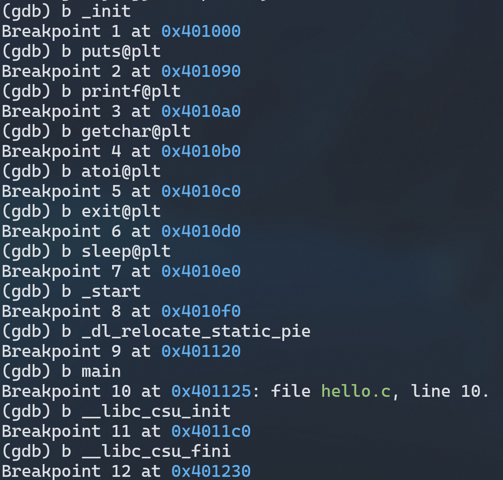

# 第5章 链接
# 链接的概念与作用
链接是将各种代码和数据片段收集并组合成一个单一文件的过程，这个文件可被加载到内存并执行。链接可以执行于编译时，也就是在源代码被编译成机器代码时；也可以执行于加载时，也就是在程序被加载器加载到内存并执行时；甚至于运行时，也就是由应用程序来执行。链接是由叫做链接器的程序执行的。链接器使得分离编译成为可能。
# 在Ubuntu下链接的命令
ld命令用于链接，但是与gcc不同的是，ld命令需要用户给出链接需要的库。所以首先需要查找hello.c使用的库。 使用gcc -m64 -no-pie -fno-PIC -Wall -Wextra --verbose hello.c -o hello.out，注意加了一个—verbose参数，用于显示gcc的具体流程。其中链接的部分如下图：
从上图可以找到链接时需要的库。比如动态链接库ld-linux-x86-64.so，静态链接库crt1.o等等。接下来可以使用ld命令进行链接。由于各个库已经位于环境变量中，所以可以将上图中各个库的绝对路径删减成文件名，如下：
注意在链接时，由于各个库的依赖关系，不能随意调整文件的顺序。 链接后，尝试运行。运行结果如下，可以看到ld命令使用没有问题：
# 可执行目标文件hello的格式
# 可执行文件ELF格式概述
使用readelf -a hello.out可以查看ELF格式。一个可执行文件的ELF格式结构如下：
# ELF头分析
由readelf可以得到hello.out的ELF头如下：

各部分解释如下，其中使用斜体突出显示了与图 20 hello.o的ELF头不同的部分：
| 项目 | 说明 |
|---|---|
| Magic | 用于确定文件的类型或格式 |
| Class： ELF64 | ELF64格式 |
| Data： 2's complement， little endian | 二进制补码格式，小端 |
| Version： 1 (current) | 版本信息Version |
| OS/ABI： UNIX - System V | 操作系统UNIX - System V |
| ABI Version： 0 | ABI版本 |
| Type： EXEC (Executable file) | 可执行文件 |
| Machine： Advanced Micro Devices X86-64 | Advanced Micro Devices X86-64的机器 |
| Version： 0x1 | 版本 |
| Entry point address： 0x4010f0 | 程序执行的入口地址 |
| Start of program headers： 64 (bytes into file) | 段头部表的开始 |
| Start of section headers： 14208 (bytes into file) | 节头部表的开始 |
| Flags： 0x0 | 一个标志位 |
| Size of this header： 64 (bytes) | ELF头大小 |
| Size of program headers： 56 (bytes) | 段头部表大小 |
| Number of program headers： 12 | 几个段头部表 |
| Size of section headers： 64 (bytes) | 节头部表大小 |
| Number of section headers： 27 | 节头部表数量 |
| Section header string table index： 26 | 字符串表在节头部表中的索引 |
需要注意的是Type： EXEC (Executable file)项，指明这个程序是可执行程序，以及Entry point address： 0x4010f0项，指明这个程序的入口地址。
# 节头表分析
readelf获得的节头表如下（由于节数量较多，只截取了一部分）：
由于节数量较多，下表以.init节为例，列出了.init节的一些基本参数及其解释：
| 参数 | 意义 | 值 |
|---|---|---|
| Address | 地址 | 0x401000 |
| Size | 大小 | 0x1b |
| Offset | 偏移 | 0x1000 |
| Flag | 权限标志位 | AX(alloc + execute) |
| Align | 对齐 | 0x4 |
从节头表中找到.text节的相关信息：
可以看到.text节的首地址是0x4010f0，正好与5.3.2 ELF头分析这部分中的Entry point address: 0x4010f0相等，如下图：
# 其他节分析
使用readelf同样可以查看hello.out的其他节，由于与hello.o相差不大，此处只展示hello.out特有的动态节，如下：
# hello的虚拟地址空间
使用edb加载hello.out，如下图：
使用 edb 的 Data Dump 窗口查看加载到虚拟地址中的 hello 程序，如下图：
在 0x400000~0x401000 段中，程序被载入，从虚拟地址 0x400000 开始，到0x400fff 结束，排列如上图所示
使用readelf查看hello.out的程序头表，如下：
在上图可以看出，程序包含 12 个段，其中：
- PHDR保存程序头表。
- INTERP指定在程序已经从可执行文件映射到内存之后，必须调用的解释器（如动态链接器）。
- GNU_STACK：权限标志，标志栈是否是可执行的。
- GNU_RELRO：指定在重定位结束之后那些内存区域是需要设置只读。
- LOAD（4个）表示一个需要从二进制文件映射到虚拟地址空间的段。其中保存了常量数据（如字符串）、程序的目标代码等。
- DYNAMIC保存了由动态链接器使用的信息。
- NOTE（2个）保存辅助信息。
# 链接的重定位过程分析
使用objdump -d -r hello.out可以获取反汇编。使用grep命令可以查找出其中所有的函数，如下：
可以看到hello.o的反汇编中只有一个main函数，如下
因此可以得知，多余的函数都是在链接阶段，根据重定位条目添加的。以puts函数为例。hello.out的反汇编中，puts函数被调用的指令如下：
而hello.o的反汇编中，puts函数被调用时，前后的指令如下：
由上图可见，在链接之前的阶段中，puts函数只在重定位条目中有所体现。
根据图 44 hello.o调用puts开始从零分析。在图中0x1a位置有一个重定位条目与其对应，该条目位于.rodata节中，类型为R_X86_64_32（表示使用绝对地址）。使用readelf获取hello.o中该条重定位信息，如下：
根据这个条目可以分析出，要将.rodata + 0的地址传递给puts函数，作为参数。使用objdump -s -j .rodata hello.o获取hello.o的.rodata节，如下：
可以看到，这正是printf的参数：
接下来，hello.o中0x1f位置又有一个重定位条目，类型为R_X86_64_PLT32（表示使用相对地址）。根据同一行的信息可以得知，此处为调用puts。通过类似图 45 hello.o重定位信息和图 46 hello.o的.rodata节中的查询方式也可以获得同样的信息。
根据以上信息，链接器成功修正了puts的重定位信息，hello.out调用puts的方式如下：
由于是相对寻址的方式，0x401144处开始的四个字节，需要满足下图的结构：
同时，需要满足的地址关系是：
0x401148 (call下一条指令的地址) + XXXX(填充的4字节) = ADDR_PUTS
在确定了puts的位置之后，就可以通过此公式计算出需要填充的4个字节。从hello.out中可以找到puts的位置：

即ADDR_PUTS = 0x401090。所以XXXX = 0x401090 – 0x401148 = -0xb8。这四个字节是一个负数，需要转换为二进制补码，即：
-0xb8
= 1000 0000 … 1011 1000 (原码)
= 1111 1111 … 0100 0111 (反码)
= 1111 1111 … 0100 1000 (补码)
= 0xff ff ff 48。
由于是小端机器，转换成小端法可以得到48ffffff与图 49 hello.out调用puts中的结果相等。
# hello的执行流程
由于edb查看不方便，此处使用gdb追踪hello.out的执行流程。使用grep命令匹配hello.out中所有的函数，如下：
在gdb中对以上每个函数加断点：

加断点后再运行，即可得知函数调用流程如下：
- _init函数，位于0x401000
- _start函数，位于0x4010f0
- __libc_csu_init函数，位于0x4011c0
- _init函数，位于0x401000
- main函数，位于0x401125
- printf@plt函数，位于0x4010a0
- atoi@plt函数，位于0x4010c0
- sleep@plt函数，位于0x4010e0
接下来进入for循环的8次重复，和6~8步相同
getchar@plt函数，位于0x4010b0
# Hello的动态链接分析
对于动态共享链接库中 PIC 函数，编译器没有办法预测函数的 运行时地址，所以需要添加重定位记录，等待动态链接器处理，为避免运行时修改调用模块的代码段，链接器采用延迟绑定的策略。动态链接器使用过程链接表 PLT+全局偏移量表 GOT 实现函数的动态链接，GOT 中存放函数目标地址，PLT 使用 GOT 中地址跳转到目标函数。
关于PIC代码，一共有四种引用情况
模块内的过程调用、跳转，采用PC相对偏移寻址
模块内数据访问，如模块内的全局变量和静态变量
模块外的过程调用、跳转
模块外的数据访问，如外部变量的访问
用readelf工具，在hello.out的节头表中可以找到GOT表：
可以看到.got.plt位于0x404000处，内容如下：
函数调用时，首先跳转到 PLT 执行.plt 中逻辑，第一次访问跳转时GOT 地址为下一条指令，将函数序号压栈，然后跳转到 PLT[0]，在 PLT[0]中将重定位表地址压栈，然后访问动态链接器，在动态链接器中使用函数序号和重定位表确定函数运行时地址，重写 GOT，再将控制传递给目标函数。之后如果对同样函数调用，第一次访问跳转直接跳转到目标函数，这点和32位一样，32位是第一次开销很大，之后GOT[3]就有了地址，之后再引用的时候只需要一次就能从GOT[3]取出ext。
# 本章小结
本章通过对于hello.o进行动态编译，获得hello可执行文件，结合链接的概念及作用分析了链接对文本.o文件的相应处理，查看 hello 的 elf 格式并分析，详细地分析ELF头，重定位信息和段头部表的各部分详细含义，并对 objdump 得到的反汇编代码与 hello.s、hello.objdump 进行比较，了解链接时重定位等操作对于相关信息的，一些转换，并对结果进行了相应的解析。
← 第4章 汇编 第6章 hello 进程管理 →